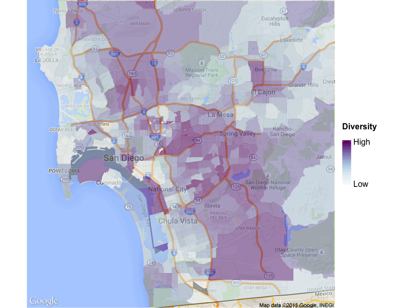
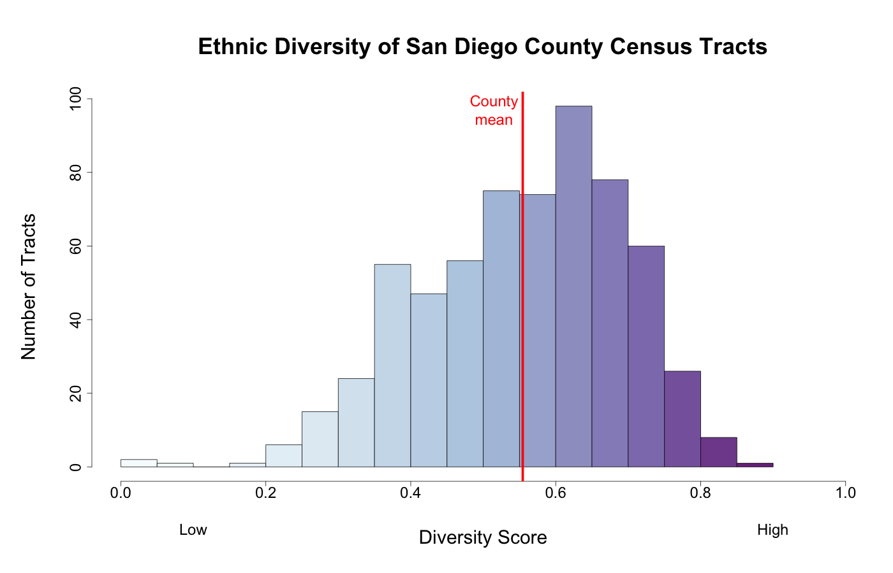
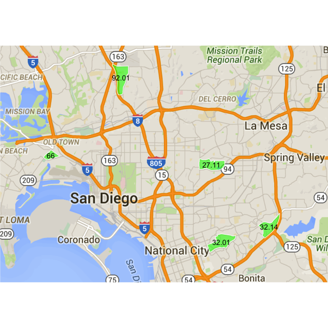
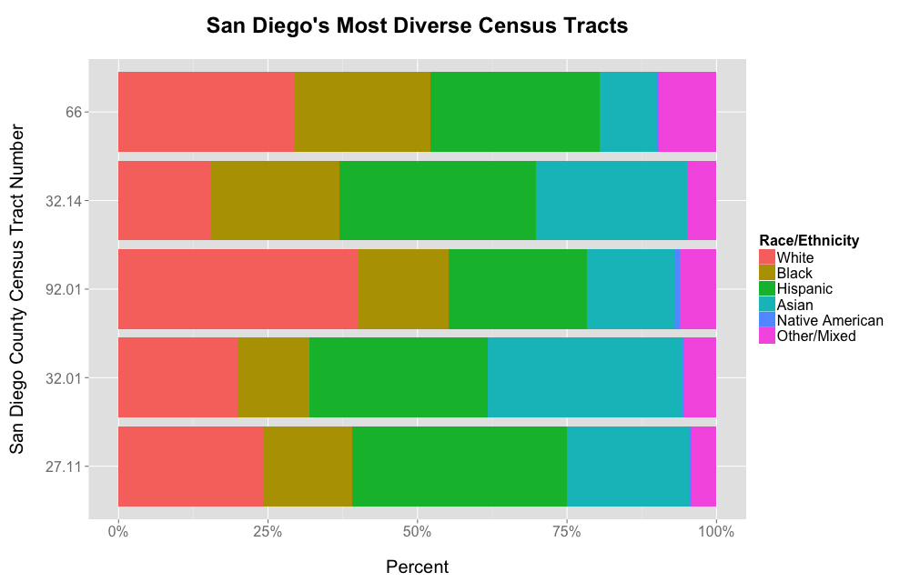
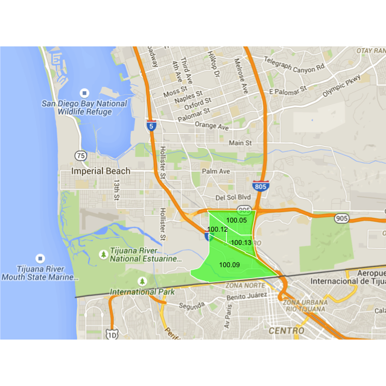
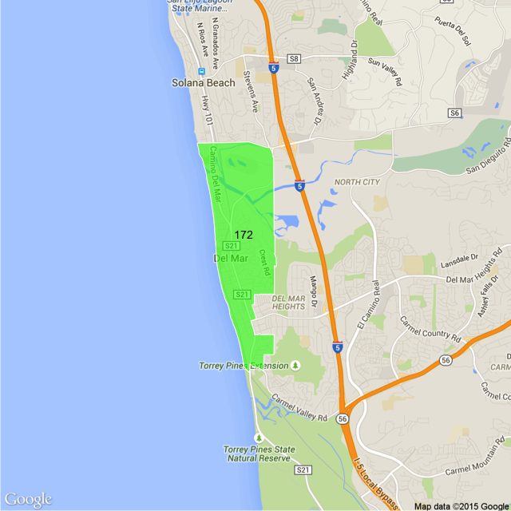
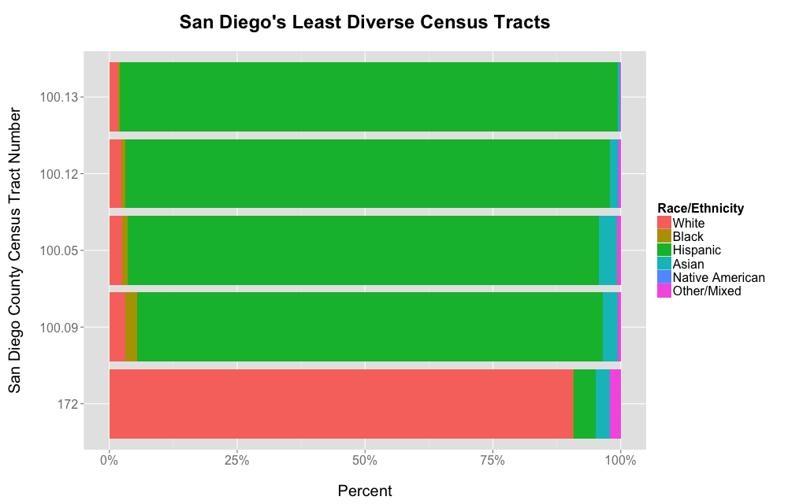

A few months ago, I posted an analysis of the ethnic diversity of Sacramento’s neighborhoods at the Census Tract level. That post led to a few requests for similar analyses covering different metro areas. One of these requests came from a friend who lives in San Diego, who happens to be getting married this weekend, and who has asked for no wedding presents. So in lieu of a present, Mike and Lan Lan, here’s a quick run-down of San Diego’s ethnic diversity. You don’t even have to give me that taco you promised in return!
The catch, of course, is that I don’t know San Diego nearly as well as I know Sacramento, so I can’t provide an in-depth analysis of the Census Tracts and the reasons for their diversity or lack thereof, though I’ll see if I can expand on this post as I learn more. As we’ll see, however, there is at least one striking difference between San Diego and Sacramento that this analysis makes clear. Let’s dig in!
WAIT, WHAT IS “DIVERSITY” AGAIN?
As a quick reminder from the last post, I’m using the Multigroup Entropy Index (aka Theil’s H or the Information Theory Index) as a measure of diversity, as described in this work done for the Census Department. In a nutshell, we categorize residents into one of six broad groups: non-Hispanic white, Hispanic, black, Asian/Pacific Islander, Native American, and mixed-race/other. A perfectly diverse census tract (scoring 1.0 on the Index) would contain exactly the same number of residents from each of these groups. A perfectly homogeneous (non-diverse) census tract (scoring 0 on the Index) would contain only members of one of these groups.
In simplifying diversity to this one number, we are of course losing a lot of detail. Chinese, Indians, and Filipinos are all lumped into one group, as are Russians, Irish, and Italians, as is anyone who identifies as Hispanic, regardless of race. But this level of categorization creates an easily-understood measure that can serve as a starting point for more detailed analysis.
HOW DIVERSE ARE SAN DIEGO’S CENSUS TRACTS?
Now that we’ve got that out of the way, let’s get to the map!

This map looks very different from the Sacramento map in the previous post. Whereas Sacramento’s highly diverse areas are all generally contiguous with each other (except for the “wedge of whiteness” that cuts into the city), San Diego’s diverse areas are a bit more diffuse. Very generally, they also tend to be away from the ocean, with areas West of the 805 and closer to the ocean tending to be less diverse (with a few obvious exceptions, including part of National City, parts of Downtown and the Gaslamp District, and Naval Base Coronado). So La Jolla is relatively non-diverse, which may not be surprising. But Chula Vista is also not as diverse as areas further East, which may be surprising indeed. If you think about the definition of “diversity”, however, the reason for this may become obvious to you. If not, keep reading! (Well, keep reading anyway!)
San Diego County’s diversity distribution is also markedly different than Sacramento’s:

Whereas Sacramento’s diversity distribution in fact peaks at the high end of the range (feel free to go back and refresh your memory), San Diego’s distribution is somewhat more normal. Very high and very low diversity are rare, with most Census Tracts clustering in the middle of the distribution. San Diego County’s mean of about 0.55 is also a bit lower than the SACOG area’s mean of about 0.6, but both are still highly diverse areas.
OK. Now that we’ve got the preliminaries out of the way, let’s dig into some of the individual tracts.
SAN DIEGO COUNTY’S MOST AND LEAST DIVERSE TRACTS
Similar to Sacramento, San Diego’s five most diverse tracts encircle the central city, but are not contiguous with each other.


As I mentioned before, my limited knowledge of the history of San Diego’s neighborhoods prevents me from performing much analysis of the reasons for high diversity in these particular tracts. However, Census Tract 66 is quite intriguing. While the other four fit my general description earlier of being away from the ocean and East of the 805, the most diverse Census Tract in San Diego is sandwiched between the airport, Old Town, and Ocean Beach, further to the West, and surrounded by relatively non-diverse areas. This tract also has nearly 10% of its population classifying itself as “other” or “mixed”, far higher than any of the other highly diverse tracts. What is going on in this tract? How did this population mix occur? If you know San Diego and the story of this area, please enlighten me!
[Update August 2, 2015: A little internet searching reveals that this tract encompasses a townhome community for enlisted service members known as Lincoln Military Housing: Gateway Village. So the diversity of the Census Tract reflects the diversity of our armed forces, and is very fitting as the most diverse Census Tract in the heavily-military San Diego area.]
But for now, we’ll move on to the least diverse tracts in the San Diego area, and that notable (but not really surprising when you think about it) difference from Sacramento.



Well, that’s very different. The five least diverse Census Tracts in San Diego County are four tracts in San Ysidro, and one in Del Mar. San Ysidro, of course, sits on the Mexican border and is nearly 100% Hispanic. Since our definition of diversity is people of different racial and ethnic backgrounds living together, San Ysidro is about as non-diverse as you can get. This is also the reason that other highly Hispanic areas of San Diego County, such as Chula Vista, rate relatively low on the diversity scale.
This is an excellent reminder that “non-diverse” itself can mean a lot of different things in a state in which non-Hispanic whites are no longer the majority.
Of course, it can also still mean majority white, as Census Tract 172 in Del Mar shows.
WHAT HAVE WE LEARNED?
Well, not as much as in Sacramento, where I more or less knew what I was talking about, but:
- San Diego’s more diverse neighborhoods generally lie away from the ocean, with many of the oceanside communities being quite non-diverse.
- One notable exception to this rule is Census Tract 66, which has a very intriguing mix of people.
- “Non-diverse” does not always mean majority white.
- San Ysidro and Del Mar have more in common than one might think.
And there’s my quick and dirty analysis of the racial and ethnic diversity of the San Diego area. I hope you enjoyed it. Also, congratulations Mike and Lan Lan! May you have a long, wonderful, and happy life together exploring all of San Diego’s neighborhoods!
Citation
@online{riphagen2015,
author = {Joel Riphagen},
title = {San {Diego} {Neighborhood} {Diversity:} {A} {Wedding}
{Present}},
date = {2015-07-31},
url = {https://joelrip.github.io/posts/2015-07-31-san-diego-diversity/},
langid = {en}
}